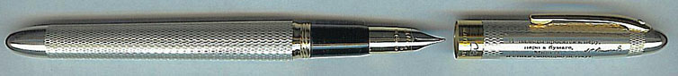
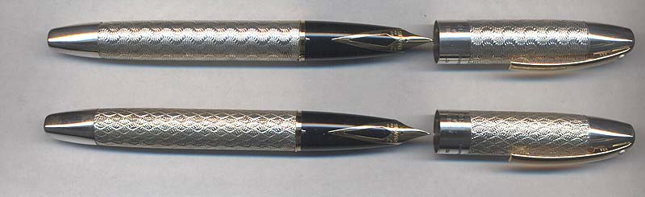
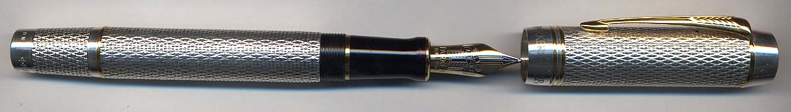
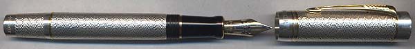
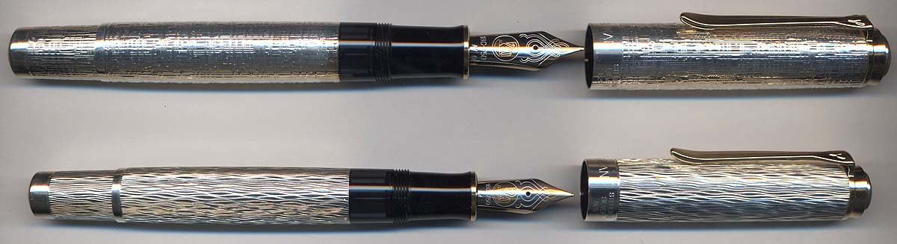
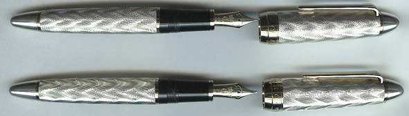

I have been collecting the CP series and have now started picking up some of the LB series. These are wonderful pens...
Not photographed yet.
I am waiting for the Kouseki...
Finally got it, but haven't photographed it yet... This is the Targa-based LE.
 No: 482
Don't have these yet... This is a set of two pens based on Aurora 88 with different finishes, called Iliad and Odyssey.
No: 132
Modern No: 349
Vintage No: 277
 Marguerite No: 70
Charlotte
 Atlantic No: 70
Pacific
Got it, but haven't photographed it yet... This based on Classic Legend 766L and produced in collaboration with Murelli pens and Aquila Brands.